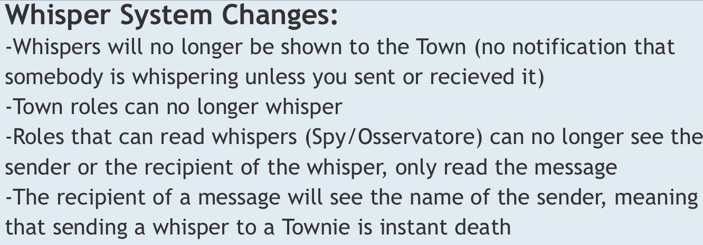

I despise whispers - but not for the reason you may expect. I understand the appeal; it’s a method your players can use to secretly communicate with each other during the day. Cool. However, whispers inevitably lead to issues, and we’re seeing some of them rear their head in the current King meta. Let’s talk about this.
First of all, why do I dislike whispers so much? I’ve been playing mafia games of all types for years, from the original party game to Forum Mafia to online video games like ToS and ToL. This means I have played many games both with and without whispers, so I have seen the effect they can have on a game. In general, what has led me to dislike whispers doesn’t have anythingto do with using them in-game. They aren’t overpowered on their own (although they can be in combination with other factors, as is the case with the infamous Mayor/Whisper Game meta in ToS), and they are most certainly not useless on their own either. However, it is nigh-on impossible to find a middle ground between these two extremes. Whispers are either too risky to be useful in any but the most extreme circumstances, or the single most effective for the Town/Blue Dragon to gather claims and solve the game. Nerfing them too much just leads them to be abandoned altogether. I have never seen whispers used in a way that doesn’t force the meta towards one of these two outcomes, and I doubt I ever will. Their very nature leaves them in a precarious position, and neither result of their inclusion is good for game design. You don’t want daytime discussion to be replaced with whispers, nor do you want a feature of your game to be basically useless. This is why I dislike whispers.
There are also some other good arguments I’ve heard against whispers, but one that really hits home with me was made by @ofLegends, discussing the impact whispers can have on new players:
Now, as for whether the meta of whispering all of your classes to the King is fun or not, that’s up to individual opinion. Personally, I’d rather have people claim and discuss during the day than everybody claiming to the King, as that leaves more than one player the ability to use social deduction, but I have seen people argue that they enjoy this meta, and more power to them. However, I believe that limiting whispers is better for the overall game health, and therefore is probably the best route to go regardless of whether you like the current meta or not.
The immediate and obvious solution to this all-or-nothing-type situation is to just remove whispers entirely, and I think that would work just fine. I’ve played plenty of games where there have been no whispers, and I have never walked away from these games feeling that they would have been better with them. This is an entirely valid solution, and one I would fully support.
However, I have my doubts that the developers would ever take this route (Town of Salem sure hasn’t, after all). So, I look to one of my suggestions for ToS:

I feel that the same concept would work well here. Let Psychic handle secure private communication, let another Social class be able to send whispers, and either let the same Social class or maybe a different one read whispers. All non-BD classes will be able to whisper, and whispers will not be made public. This actually has far fewer problems than it may initially seem. The BD class that can send whispers isn’t instantly confirmable, as all evils can send them just as easily; a BD-sided whisper-reader is also unconfirmable, because no other BD can send whispers to test them. This makes whispering a risky proposition, but also allows evils to contact each other if necessary (Unseen can reach out to an NK), while punishing bad reads (whispering a BD class you thought was evil may spell your doom). In addition, you could remove the message for a Mercenary guarding a player, and let them claim it in whispers instead.
Now, I do fully admit that this suggestion was built for a different game, and may not work as well here. For example, how does the King interact with this? Maybe all Kings can send whispers, or maybe even read them. There are many posdibilities, and I sure as heck didn’t think them all through yet. So, please let me know what you think about whispers, and whether a system like the one I suggested ToS implement would be a good idea, or whether you’d just remove whispers full-stop.
Thanks, and have a wonderful day.